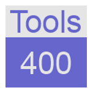

iSphere is an open source plug-in for RDi 9.5.1.3+. It delivers high quality extensions
for WDSC, RDP and RDi to further improve developer productivity. The current version is .
IBM's current Eclipse based Integrated Development Environment (IDE) is a huge step beyond SEU, but
it still lacks features available only on the green screen. That is where the iSphere Project comes
into play, filling in those gaps.
iSphere features are driven from our ideas and needs, but everybody is encouraged to contribute
suggestions and manpower to improve the power of iSphere.
The iSphere Project Team |
Task Force IT-Consulting GmbH, Frank Hildebrandt |
|

Tools/400, Thomas Raddatz |
|
|
Contributors |
|
| Peter Colpaert | - | Dutch Translation |
|
| Wim Jongman | - | Dutch Translation |
|
| Nicola Brion | - | Italian Translation |
|
| Marco Riva | - | Italian Translation |
|
| Sam Lennon | - | Documentation |
|
| Buck Calabro | - | Documentation |
|
The easiest way to install the iSphere plug-in is using Eclipse Marketplace. Search for
iSphere:
But you can also use the official update site at GitHub:
Last but not least you can download the local update site as a zip file and install iSphere from there:
Refer to the iSphere
help page for detailed installation instructions.
The iSphere beta version is available here:
Refer to the iSphere
help (beta version) page for detailed installation instructions.
{kind=link}
{kind=link}
{kind=link}
{kind=link}
{kind=link}
{kind=link}